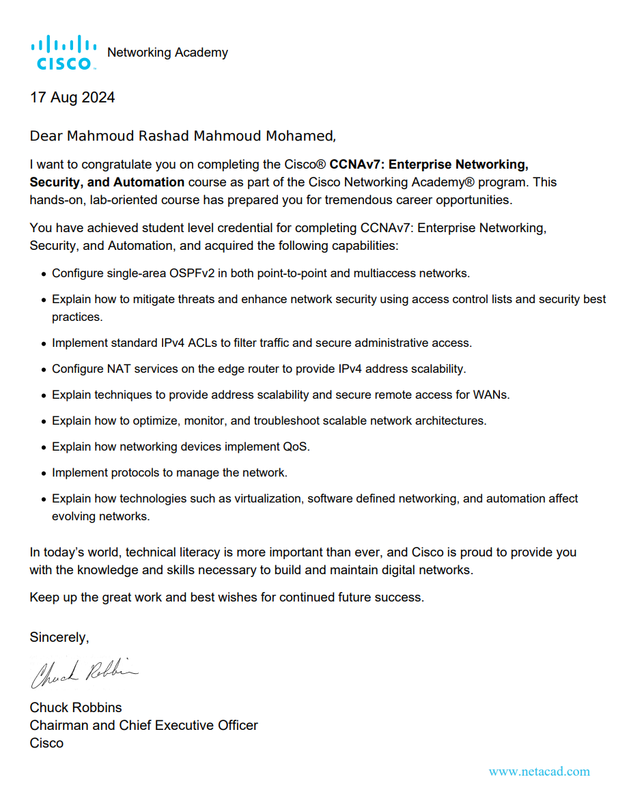
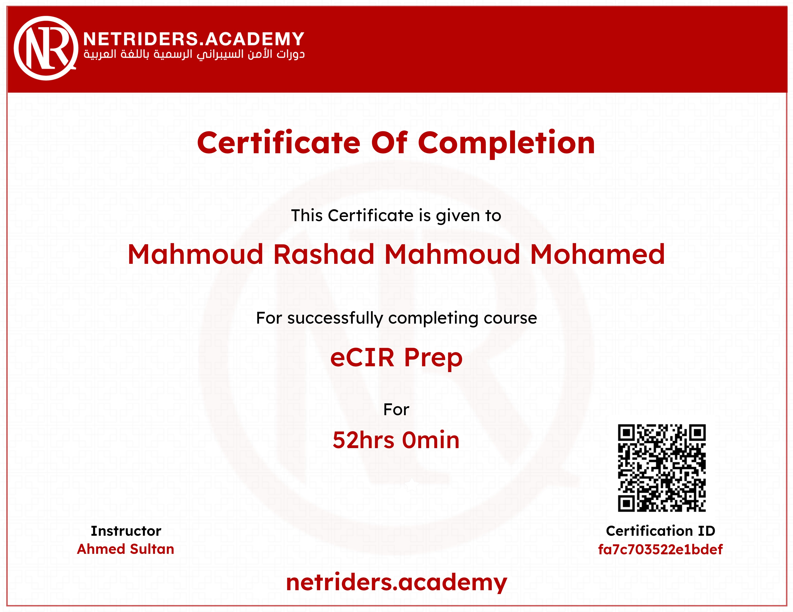
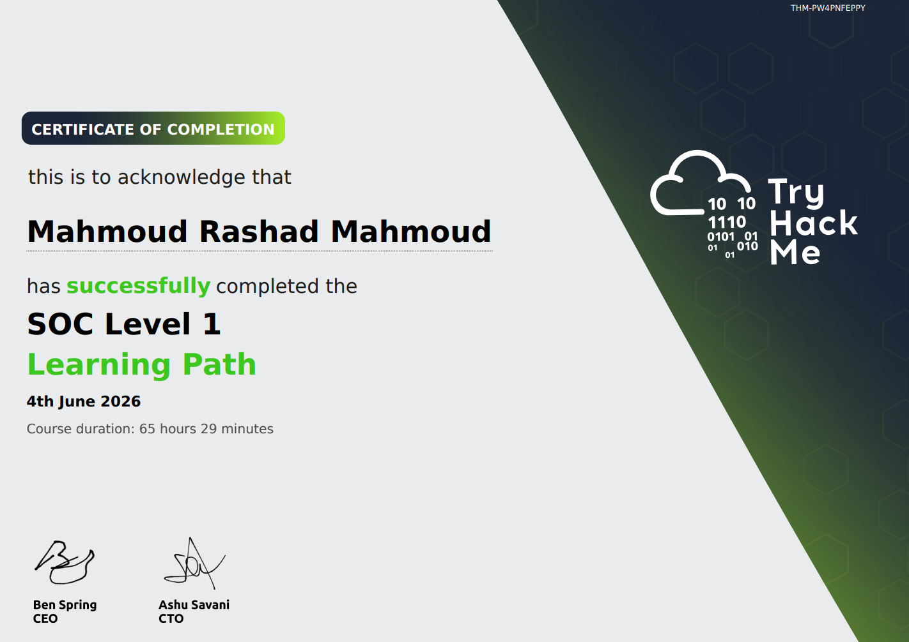
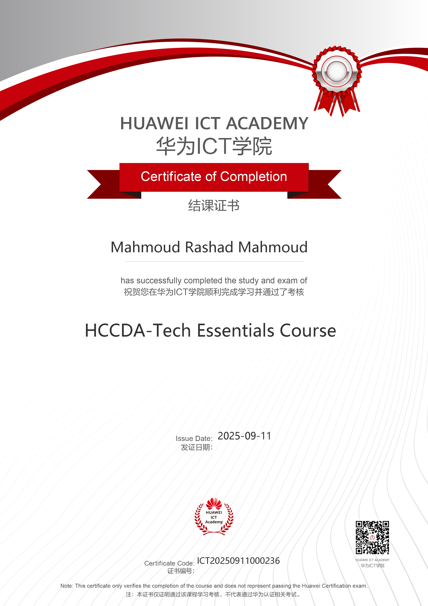
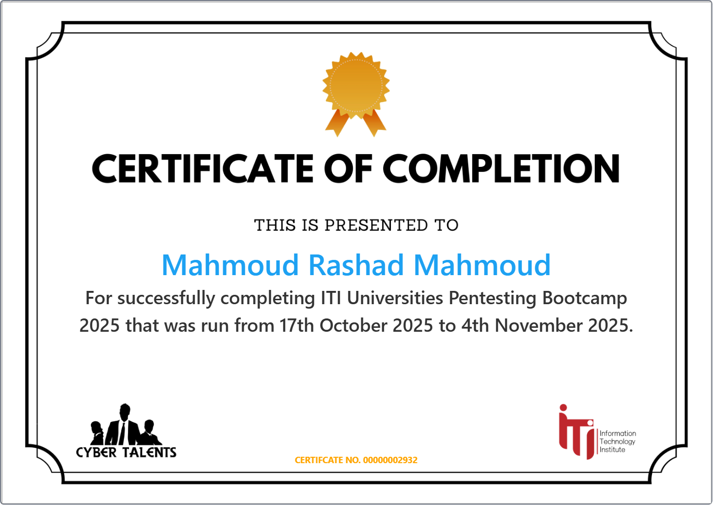
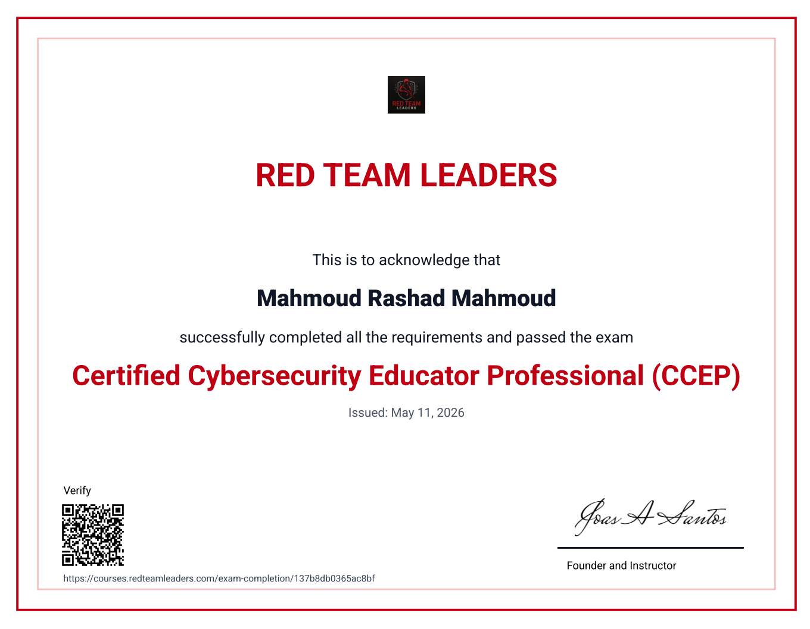
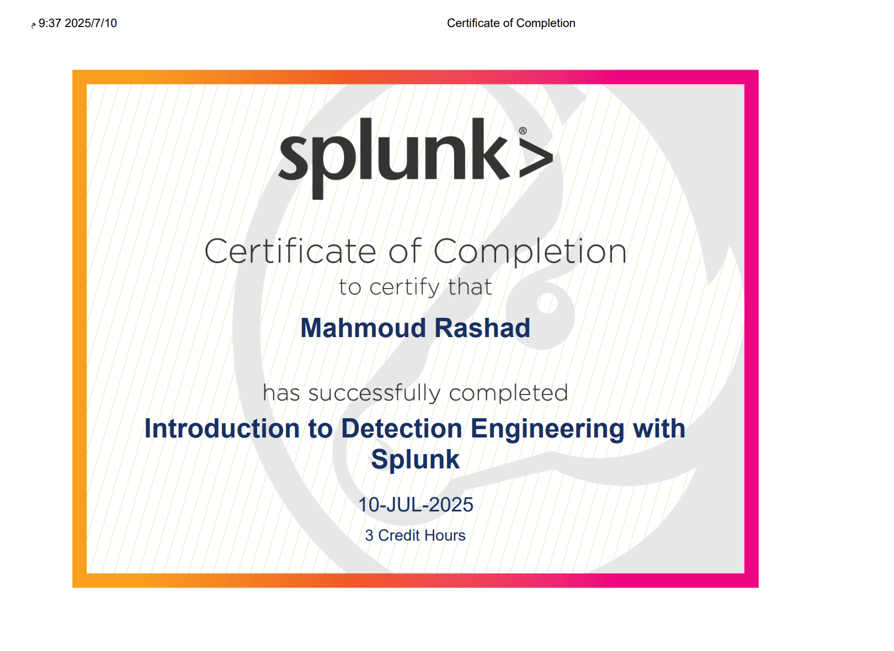

04. Certifications
Industry recognized validation of my security knowledge and practical skills.

Cisco Certified Network Associate (CCNA)
Cisco

eCIR
Netriders

TryHackMe Certifications
Pre Security, SOC 1

Huawei Certified Cloud Developer Associate (HCCDA)
Huawei

eJPT v1
CyberTalents

Certified Cybersecurity Educator Professional (CCEP)
Cybersecurity Education

Introduction to Detection Engineering with Splunk
Detection Engineering

Python Programming
Programming

Cloud and Virtualization Concepts
Cloud Computing

Network Virtualization Concepts
Networking

Ethical Hacking and Penetration Testing
Penetration Testing
Other Certifications & Courses: Cyber Security Training (ITI & CyberTalents), Network Security (NTI), AWS Cloud Security Training (NTI), Red Hat System Administration I, eCIR (Netriders)
View All Certificates